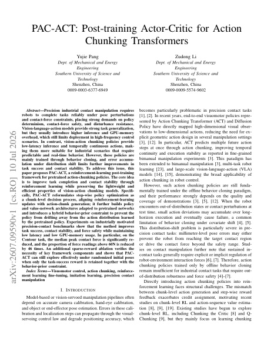

PAC-ACT
Post-training Actor-Critic for Action Chunking Transformers
arXiv preprint · July 2026

Overview
A contact policy can reach the right area and still apply too much force. PAC-ACT starts from a pretrained Action Chunking Transformer and fine-tunes how it acts when the starting pose and contact conditions change.
Learning under contact
The actor and critic operate on action chunks. A behavior prior constrains the update so that the policy can explore while retaining the action distribution learned from demonstrations. On the Contour task, the paper reports a 46-fold reduction in the proportion of force readings above 60 N.
Contact experiment
The video shows an ACT baseline episode in MuJoCo. The paper contains the comparisons with reinforcement-learning post-training.

Paper

PAC-ACT: Post-training Actor-Critic for Action Chunking Transformers
Yujie Pang, Zudong Li
arXiv preprint · July 2026
BibTeX
@misc{pang2026pacact,
title = {PAC-ACT: Post-training Actor-Critic for Action Chunking Transformers},
author = {Pang, Yujie and Li, Zudong},
year = {2026},
eprint = {2607.09590},
archivePrefix = {arXiv},
primaryClass = {cs.RO},
url = {https://arxiv.org/abs/2607.09590}
}